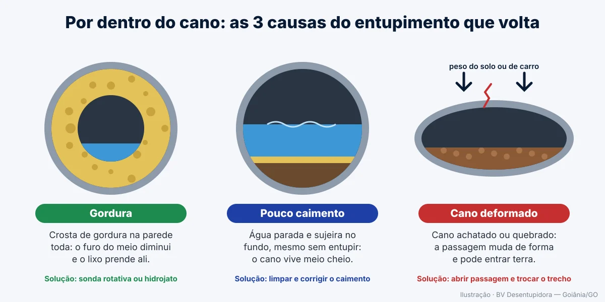
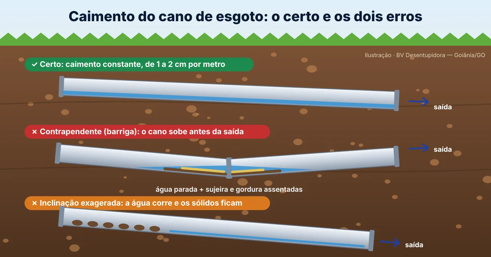

Entupimento recorrente em Goiânia: como saber se é gordura, cano sem caimento ou cano deformado
Publicado em · Atualizado em · 8 min de leitura
Quando o entupimento volta, o desentupimento tratou o sintoma e a causa continuou no cano. As três causas mais comuns deixam sinais diferentes. Gordura: atinge pia e cozinha, volta em semanas e sai do cano em placas amareladas. Pouco caimento ou contrapendente (a “barriga”): a caixa de inspeção fica sempre com água parada, o ralo borbulha e o entupimento aparece sempre no mesmo ponto. Cano deformado: a ferramenta trava sempre na mesma distância, às vezes sai terra, e o trecho costuma passar sob garagem ou área com peso. Gordura sai com sonda rotativa ou hidrojato; pouco caimento e cano deformado só se resolvem de vez corrigindo ou trocando o trecho.
"Desentupiu e voltou" é a reclamação que mais escuto em 10 anos de serviço. Quase sempre a pessoa já gastou com produto, já chamou alguém, e o problema retornou em semanas. Isso não quer dizer que o serviço anterior foi mal feito: quer dizer que a causa não era só a sujeira. Abaixo explico como diferenciar as três causas mais comuns e o que resolve cada uma.
Resumo: as 3 causas lado a lado
| Causa | Sinais típicos | O que sai do cano | O que resolve |
|---|---|---|---|
| Gordura acumulada | Pia e cozinha; volta em semanas; cheiro de gordura velha | Placas e pedaços amarelados ou acinzentados | Sonda rotativa ou hidrojato, e caixa de gordura em dia |
| Pouco caimento ou contrapendente | Caixa sempre com água parada; ralo borbulha; entope sempre no mesmo lugar | Lama, areia e sujeira assentada | Limpeza dá alívio; corrigir o caimento resolve |
| Cano deformado ou quebrado | Ferramenta trava sempre na mesma distância; trecho sob garagem ou árvore | Terra, pedaços de cano, raiz | Sonda rotativa abre passagem; trocar o trecho resolve |
As causas também se somam. Um cano com barriga acumula gordura justamente no ponto baixo, e um cano amassado segura gordura e terra no estreitamento.

Por que o desentupimento resolve, mas o problema volta?
Desentupir é abrir passagem. Se o motivo do acúmulo continua lá, a sujeira volta a parar no mesmo ponto:
- Com gordura, abrir só um furo no meio da crosta deixa a parede do cano áspera e estreita. O resto de comida prende ali de novo.
- Com pouco caimento, a água não tem velocidade para levar os sólidos. Eles assentam no trecho plano ou na barriga, entupimento após entupimento.
- Com cano deformado, o estreitamento é físico. A ferramenta passa, mas o cano continua amassado.
Por isso, num entupimento que se repete, a pergunta não é só "o que entupiu", e sim "por que entupiu aqui de novo".
Como saber se a causa é gordura?
- O problema começa na pia da cozinha, no tanque ou na caixa de gordura.
- Volta em semanas ou poucos meses, de forma gradual: primeiro a água desce devagar, depois para.
- Quando o cano é aberto, saem placas, "pedras" ou pedaços de gordura grudados na parede.
- A caixa de gordura fica cheia rápido ou está sem limpeza há muito tempo.
- Já foi usada soda cáustica várias vezes. Ela tende a deixar a gordura mais dura, como explico em por que a gordura vira pedra no cano.
Gordura pura costuma ser a causa mais simples de resolver: com a parede do cano limpa por inteiro e a caixa de gordura em dia, o problema para de voltar. Se volta mesmo assim, desconfie também do caimento.
Como identificar uma tubulação com pouco caimento ou contrapendente?
Esgoto funciona por gravidade. Para a água levar os sólidos, o cano precisa descer o tempo todo na direção da saída. A NBR 8160 recomenda declividade mínima de 2% para canos de até 75 mm e de 1% para canos de 100 mm ou mais. Na prática, isso é 2 cm de queda a cada metro nos canos finos e 1 cm por metro nos de 100 mm.
Contrapendente é quando o cano sobe em algum trecho antes da saída. O caso mais comum é a "barriga": um pedaço que afundou e ficou mais baixo que o resto. Ali a água fica parada o tempo todo e a sujeira assenta.

Sinais que apontam para caimento errado:
- Caixa de inspeção sempre com água parada, mesmo horas depois de ninguém usar nada. Numa rede com bom caimento, a caixa esvazia.
- Entope sempre no mesmo ponto. O técnico mede quanto a mola entrou e a obstrução está sempre na mesma distância.
- Ralo e vaso borbulham ou fazem barulho quando outro ponto da casa escoa.
- Sai muita lama e areia no desentupimento, e pouca gordura ou objeto.
- O problema começou depois de uma obra, de piso que afundou ou de um trecho de cano refeito.
Inclinação demais também atrapalha. Em trechos muito íngremes, a água corre na frente e os sólidos ficam para trás, colados no fundo do cano. Na nossa experiência, isso aparece em emendas improvisadas e em reformas que mudaram a altura da saída.
A confirmação vem com medição: nível de mangueira ou nível a laser entre duas caixas, ou inspeção com câmera, que mostra a lâmina de água parada no trecho baixo.
Esse não é um problema raro em Goiânia. Um trabalho de conclusão de curso de Engenharia Civil da UFG, que acompanhou obras de redes coletoras de esgoto na Região Metropolitana de Goiânia, registrou práticas que dificultam o controle da declividade, como escavar a vala no sentido contrário ao que a norma indica, e cadastros que nem sempre batem com o que está enterrado. Outro estudo publicado pela revista de engenharia civil da UFG alerta que a redução do volume de água nas descargas, sem ajuste nos ramais e coletores, aumenta os entupimentos. Com menos água, o caimento faz ainda mais diferença.
Como saber se o cano está deformado ou quebrado?
- A mola ou o jato trava sempre no mesmo lugar, e a sensação é de bater numa parede, não numa sujeira mole.
- Sai terra, areia grossa ou pedaços de cano: sinal de rachadura ou emenda solta.
- O trecho passa sob garagem, entrada de carro ou perto de árvore, ou foi enterrado raso.
- Existe afundamento ou rachadura no piso em cima do trajeto do cano.
Caso real (Itaberaí, GO, nov/2026): em um sobradinho, a rede pluvial estava obstruída havia meses. O hidrojato não passava: o encanamento estava achatado e cheio de terra. A passagem foi aberta com sonda rotativa, até a água voltar a escorrer. Contei os detalhes no LinkedIn, em O hidrojato não passou. A sonda rotativa passou. A sonda resolveu a urgência, mas um cano achatado continua sendo um ponto estreito, e esse trecho é candidato a troca.
Exemplo ilustrativo: quando as causas se juntam
Exemplo ilustrativo (montado a partir de situações frequentes, não é um atendimento específico): numa casa, a pia da cozinha entope a cada dois meses. Já usaram desentupidor de mercado e chamaram ajuda duas vezes; nas duas, saiu gordura e o problema voltou. Na terceira vez, o técnico anota até onde a mola entra: a obstrução está sempre a uns 6 metros, no trecho que passa sob a entrada da garagem. A câmera mostra água parada num pedaço de uns 2 metros, com gordura grudada só ali. Nesse cenário, a gordura não é a causa principal: ela é consequência da barriga. Limpar resolve por mais dois meses; corrigir o caimento daquele trecho resolve de vez.
O que esse exemplo mostra: anotar onde e de quanto em quanto tempo o entupimento acontece ajuda muito o diagnóstico.
Quando a sonda rotativa resolve e quando é preciso corrigir a tubulação?
| Situação | Sonda rotativa resolve? | Precisa corrigir o cano? |
|---|---|---|
| Gordura em placas, cano em bom estado | Sim (ou hidrojato) | Não |
| Pouco caimento leve, sem barriga | Alivia; pede manutenção periódica | Às vezes não, se a limpeza preventiva der conta |
| Barriga ou contrapendente | Só temporariamente | Sim, refazer o trecho com caimento |
| Cano achatado ou com terra | Abre passagem na urgência | Sim, trocar o trecho deformado |
| Cano quebrado ou emenda solta | Não deve ser forçada | Sim |
Corrigir não significa quebrar a casa inteira. Na maioria das vezes é um trecho localizado, encontrado pela medição da mola e pela câmera. Veja quando é preciso quebrar o piso.
O que dá para observar em casa?
Algumas dicas que encanadores e moradores trocam em fóruns como o Reddit, e que ajudam no diagnóstico:
- Anote as datas dos entupimentos e qual ponto parou primeiro.
- Abra a caixa de inspeção algumas horas depois de ninguém usar água. Se tiver água parada, desconfie do caimento depois dela.
- Teste do balde: jogue um balde de água limpa no ralo ou no vaso e observe a caixa seguinte. A água deve chegar e ir embora; se sobe e demora a baixar, o problema está depois dali.
- Repare no piso: trinca ou afundamento em cima do trajeto do cano é pista importante.
- Mantenha a caixa de gordura limpa, para tirar a gordura da lista de suspeitos. Veja de quanto em quanto tempo limpar.
- Repetir soda cáustica a cada entupimento: não corrige caimento nem cano amassado e endurece a gordura.
- Forçar arame ou vergalhão num ponto que trava sempre: pode furar o cano que já está fragilizado.
- Refazer a rede inteira sem diagnóstico: muitas vezes o problema é um trecho só.
Quando chamar um profissional?
- O entupimento voltou mais de uma vez no mesmo ano.
- A caixa de inspeção vive com água parada.
- Sai terra ou pedaço de cano no desentupimento.
- Há afundamento no piso, mau cheiro constante ou retorno de água.
Peça que o técnico diga onde estava a obstrução e o que saiu do cano. Com essas duas informações, já dá para saber se o próximo passo é manutenção ou correção. Para entender a gravidade, veja os 4 níveis de entupimento.
Perguntas frequentes
Por que o meu esgoto entope sempre no mesmo lugar?
Normalmente porque ali existe um defeito físico: barriga, trecho sem caimento, emenda mal feita ou cano amassado. A sujeira para sempre nesse ponto. Limpar alivia; corrigir o trecho resolve.
O que é contrapendente no esgoto?
É quando o cano sobe em algum trecho antes da saída, em vez de descer. A água fica parada ali e os sólidos assentam, causando entupimentos repetidos.
Qual a inclinação certa do cano de esgoto?
A NBR 8160 recomenda declividade mínima de 2% para canos de até 75 mm (2 cm por metro) e de 1% para canos de 100 mm ou mais (1 cm por metro), de forma constante.
Sonda rotativa resolve cano com barriga?
Resolve a obstrução na hora, mas não corrige o caimento. Com a barriga no lugar, a sujeira volta a se acumular no mesmo ponto.
Como saber se o cano está amassado sem quebrar o piso?
Pela medição de onde a ferramenta trava sempre, pelo que sai do cano (terra, pedaços) e, para confirmar, com inspeção por câmera a partir de uma caixa ou ralo.

Sobre o autor
Lucas Nonato é fundador da BV Desentupidora em Goiânia e trabalha há 10 anos com desentupimento, hidrojateamento, limpeza de caixa de gordura e redes de esgoto e pluviais em Goiânia, Aparecida de Goiânia, Anápolis, Itaberaí, Inhumas e região. Os casos citados neste artigo são de atendimentos reais da equipe. Perfil no LinkedIn.
Fontes
- ABNT. NBR 8160:1999 — Sistemas prediais de esgoto sanitário: projeto e execução. Define caixa de gordura, caixa de inspeção e caixa sifonada.
- Revista do ICESP. Artigo sobre instalações prediais de esgoto (NBR 8160): declividade de 2% para tubulações de até DN 75 e de 1% a partir de DN 100.
- Gondim, M. A.; Jardim, M. C. V.; Arantes, R. P. C. (2010). Avaliação dos aspectos construtivos de redes coletoras de esgoto: estudo de caso para a Região Metropolitana de Goiânia. TCC de Engenharia Civil, UFG (orientador: Eraldo Henriques de Carvalho). Registra escavação de montante para jusante, que dificulta o controle da declividade, e cadastros que nem sempre refletem o campo.
- Reis, R. P. A. (2012). Influência da redução do consumo de água sobre o desempenho dos ramais e coletores prediais de esgoto. REEC — Revista Eletrônica de Engenharia Civil (UFG), v. 5, n. 2. Associa a menor vazão ao aumento de entupimentos, de manutenção e de odores.
- Bucar Filho, C. L. (2019). Impacto das variáveis de projeto nas características físicas do escoamento de esgoto em tubulações prediais. Dissertação de mestrado, UFG (orientador: Marcus André Siqueira Campos). Conclui que são necessárias mais pesquisas para a renovação da NBR 8160.
- Lucas Nonato (LinkedIn, nov/2026). O hidrojato não passou. A sonda rotativa passou: o caso da rede pluvial achatada em Itaberaí-GO.
- Experiência de campo da equipe BV Desentupidora (atendimentos em Goiânia, Itaberaí, Inhumas, Heitoraí e região).